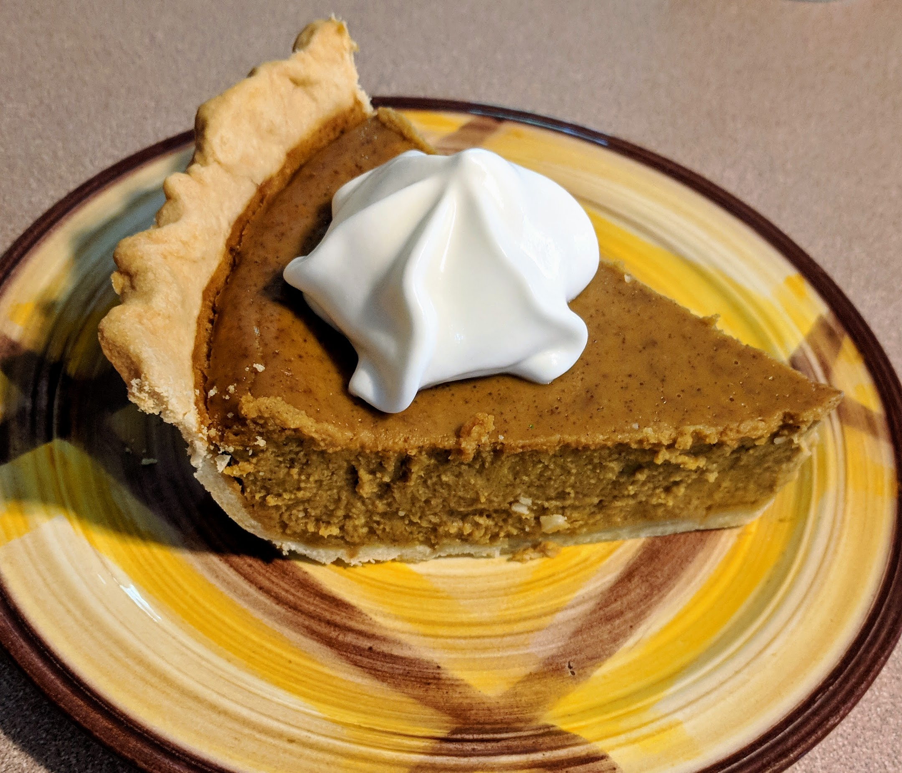

Easy Homemade Pie Crust
Learn how to make an easy pie crust for all your pie needs with this recipe!
This makes an excellent cheesecake, similar to one you would get in a restaurant. Great for special occasions! Garnish with white chocolate curls if desired.
Prep Time: 1 hour Cook Time: 1 hour Additional Time: 8 hours Total Time: 10 hours Yield: (1) 9 inch cheesecake Servings: 16
| 1 Cup | Cookie Crumbs |
| 3 Teaspoons | White Sugar |
| 1/4 Cup | Melted Butter |
| 1 (10 ounce) package | Frozen Raspberries |
| 2 Teaspoons | White Sugar |
| 2 Teaspoons | Corn Starch |
| 1/2 Cup | Water |
| 2 Cups | White Chocolate Chips |
| 1/2 Cup | Hald-and-half cream |
| 3 (8 ounce) packages | Cream Cheese |
| 1/2 Cup | White Sugar |
| 3 | Eggs |
| 1 Teaspoon | Vanilla Extract |
| Cookware | Medium Bowl |
| Saucepan | |
| Mesh Strainer | |
| Hand Mixer | |
| Knife or Skewer | |
| Springform Pan* (optional) | |
| or Regular Cake Pan | |
| Heating Element | Oven |
| Measurings | 1 Cup |
| 1/2 Cup | |
| 1 Teaspoon | |
| 1 Tablespoon |
Grease or line your 9 inch springform pan with
In a medium bowl, mix together the 1 cup of cookie crumbs, 3 tablespoons of sugar, and 1/4 cup of melted butter.
Press this mixture evenly into the bottom of your pan to make the crust.
In a saucepan over medium-high heat, combine all of the raspberries with 2 tablespoons of sugar, 2 tablespoons of cornstarch, and a 1/2 cup of water.
Constantly stir to prevent it to prevent from burning. Bring it to a boil and boil it for 5 minutes, or until the sauce is thick.
Strain the sauce through a mesh strainer to remove seeds.
You should now preheat your oven to 325 degrees F.
Create a
In a large bowl, mix together all of the cream cheese and 1/2 cup sugar until smooth.
Beat in the 3 eggs one at a time.
Then blend in 1 teaspoon of vanilla and the melted white chocolate mixture.
Pour half of batter over the crust in the pan.
Spoon 3 tablespoons raspberry sauce over batter.
Pour the remaining cheesecake batter into the pan.
Spoon 3 tablespoons raspberry sauce over the top. Swirl batter with the tip of a knife to create a marbled effect.
Save the extra raspberry sauce for topping the finished cheesecake!
Put the cheesecake in the oven and bake for 55 to 60 minutes, or until filling is set and no longer jiggles. Test it with a toothpick in the center. If the toothpick comes out clean, it is done.